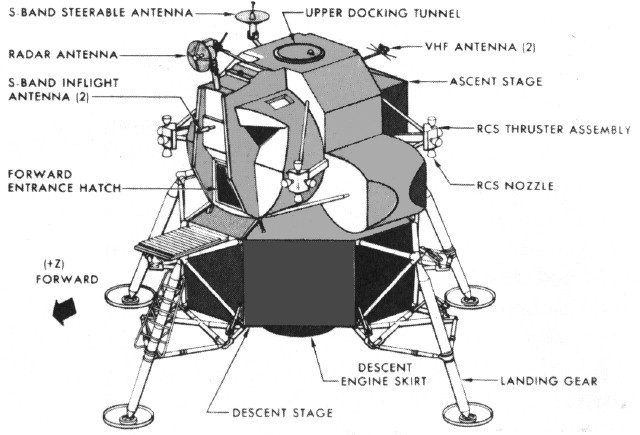
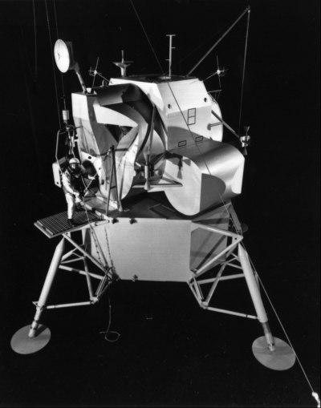
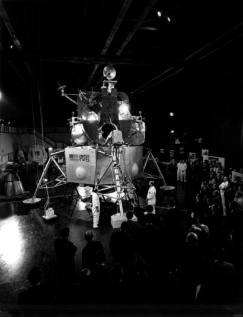
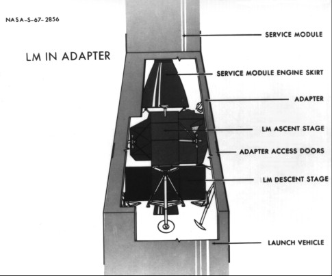

The lander originally had two docking hatches, one at the top center of the cabin and another in the forward position, or nose, of the vehicle, with a tunnel in each location to permit astronauts to crawl from one pressurized vehicle to the other. (Extravehicular transfer between craft remained an emergency backup method.) After injection into a translunar trajectory, a course toward the moon, the command module pilot would turn his ship around, fly up to and dock with the lander's upper hatch, and then back the two vehicles away from the spent S-IVB third stage. This top-to-top docking arrangement aligned the thrust vector of the service module propulsion engine with the centers of gravity of the two spacecraft, thus avoiding adverse torques or tendencies to tumble during firings for midcourse corrections and injection into lunar orbit. The crew would enter the lunar module through this hatch. When the lander returned from the moon, however, the front hatch would be used for docking and crew transfer. With no windows in the top of the lander, the lunar pilots would be flying blind if they docked with the upper hatch. One of Grumman's human factor experts later said, in an apt analogy, "It's nice to see the garage . . . when you drive into it."15

The drawing shows improved lunar module features - ladder, porch, hatch, and rendezvous window (above the triangular window).
By spring 1964, NASA and Grumman engineers were thinking of deleting the front docking procedure and adding a small window above the lunar module commander's head. This overhead window might add seven kilograms weight and some extra thermal burden, but cabin redesign would be minimal. The added weight would be offset by eliminating the front tunnel and the extra structural strength needed to withstand impact loads in two areas. Eliminating forward docking had another advantage. The hatches could now be designed for a single purpose - access to the command module through one hatch and to the lunar surface through the other - which certainly simplified the design of the forward hatch. NASA directed Grumman to remove the forward docking interface but to leave the hatch for the astronauts to use as a door while on the moon.16
Once the location of the hatches was settled, getting the astronauts out and onto the lunar surface had to be investigated. Using a cable contraption called a "Peter Pan rig" to simulate the moon's gravity, Grumman technicians looked into ways for the crews to lower themselves to the lunar surface and to climb back into the spacecraft. When astronaut Edward White, among others, scrambled around a mockup of the lander, using a block and tackle arrangement and a simple knotted rope, he found that both were impractical. In mid-1964 a porch, or ledge, was installed outside the hatch and a ladder and handrail on the forward landing gear leg. When the astronauts discovered they had trouble squeezing through the round hatch in their pressurized suits and wearing the bulky backpads, the hatch was squared off to permit easier passage.17

Astronauts found a knotted rope from the lunar module difficult to climb down (or up)

The addition of a ladder on a landing gear leg made the task much easier.
All these design features, although unusual, appeared to be compatible with the lunar environment - at least the engineers did not entertain any special worries. But the landing gear was different. The design of the legs and foot pads depended on assumptions about the nature and characteristics of the lunar surface. In the absence of any firm knowledge and with scientific authorities differing radically in their theories, how should one design legs to support a craft landing on the moon?
Grumman had first considered five legs but, during 1963, decided on four. The change was dictated by the weight-versus-strength tradeoff that had produced the cruciform descent stage, with its four obvious attachment points. The revised gear pattern also greatly simplified the structural mounting of the vehicle within the adapter. Four legs set on the orthogonal axes of the lander (forward, aft, left, and right) mated ideally with the pattern of four reaction control "quads" (the basic four-engine package). The quads were rotated 45 degrees so the downward-thrusting attitude control engine fired between the two nearest gear legs, overcoming a severe thermal problem of the five-leg arrangement.18
While Bethpage was wrestling with the legs, Houston decided it had been too optimistic about the load-bearing strength of the lunar surface in the request for proposals. The resulting revision placed heavier demands on the landing gear, and Grumman had to enlarge the foot pads from 22 to 91 centimeters in diameter. The bigger feet made the gear too large to fit into the adapter. A retractable gear therefore replaced the simpler fixed-leg gear. Retractability also figured in the shift from five to four legs - the fewer to fold, the better.

The fit of the LM inside the adapter during launch.
Leg experts at Grumman had to change the geometry of the undercarriage, devise the best structure for impact absorption and stability upon landing, and choose the most suitable folding linkages. A broad program of computer-assisted analysis at Houston and Bethpage was used to determine the worst combinations of conditions at impact. The studies were reinforced by drop tests of lander models at Houston, Bethpage, and Langley. There were also plans to drop-test full-sized test articles to check out the new designs.19
During 1963 Grumman engineers continued to worry about the nature of the lunar surface and to carry on theoretical and simulation studies of lunar geology and soil mechanics, with the support of such consulting firms as the Stevens Institute of Technology in New York and the Arthur D. Little Company in Massachusetts. Much of this work covered the interaction between vehicle and surface at the moment of landing. What would happen to the landing gear at touchdown? Would the lunar dust that might be kicked up by the descent engine exhaust obscure the landing site? Would soil erosion affect the stability of the lander? Washington also assisted in this research. In mid-1963, Bellcomm surveyed all that was being done inside and outside NASA and suggested that a backup gear be developed, in case the surface should be more inhospitable than it appeared.20
But Grumman could not wait on the outcome of these studies. At meetings in Houston in October and November, contractor engineers described gears that tucked sideways (lateral folding) for stowage in the adapter; a tripod arrangement (radial), with three struts meeting at the base just above the footpad, that tucked inward; and a cantilevered device, with secondary struts for extra strength that folded inward against the vehicle for stowage and braced the leg when deployed for landing. Houston and Bethpage selected the cantilevered version. Somewhat narrower than the radial one, it was, in many ways, more stable. It had other advantages: less weight, shorter length for easier stowage, and a simpler, and therefore more reliable, folding mechanism.
A landing gear for the lunar surface had to be designed for varying landing conditions, such as protuberances, depressions, small craters, slopes, and soil-bearing strength. To achieve the necessary stability, the landing gear had to be able to absorb a diversity of impact loads. Houston and Bethpage met this challenge by using crushable honeycomb material in the struts, so the gear would compress on impact. A principal advantage of honeycomb shock absorbers was their simplicity. Since they had to work only once, the more common hydraulic shock absorbers and their complexities could be avoided. Subsequently, crushable honeycomb was also applied to the large saucerlike foot pads to improve stability further for landing.21
15. Donald K. Slayton to ASPO, Attn.: William A. Lee, "Docking Operational Requirements," 2 Dec. 1963; Kelly, "Technical Development Status," p. 29; "Some Notes on Evolution of LEM," pp. 1-2; Sherman interview.
16. Joseph P. Loftus to Chief, Sys. Eng. Div. (SED) , "Disposition of TM-1 mockup review chit no. A9-4," 28 April 1964; Slayton to ASPO, Attn.: Maynard, "LEM overhead window experiment," 6 May 1964; LEM PO, "Accomplishments," 14–20 May 1964.
17. Sherman interview; Kelly, "Technical Development Status," p. 29; "Some Notes on Evolution of LEM," pp. 3-4.
18. Kelly, "Technical Development Status," p. 48; John L. Sloop to Dep Admin., NASA, "Comparison of technology readiness at start of Apollo and Shuttle," 11 Feb. 1972, with encs.; Maynard, interview, Houston, 18 Feb. 1970; Grumman Report no. 1, LPR-10-1, 10 March 1963, p. 5, and no. 3, LPR-10-6, 10 May 1963, p. 7.
19. Grumman Report no. 4, LPR-10-7, 10 June 1963, p. 13; Robert A. Newlander to John W. Small and Walter J. Gaylor, "LEM Landing Gear," 8 May 1963; Newlander to Mgr., RASPO, "Trip . . . to MSC on May 20, 21, 22, 1963 to attend Mechanical Systems Meeting," 27 May 1963; MSC Director's briefing notes for 25 June 1963 MSFMC meeting; Decker draft memo to Grumman, "Landing Gear," 21 Aug. 1963; ASPO Weekly Activity Report, 5–11 Sept. 1963, pp. 7-8; Newlander to Gaylor, "1/6 Scale Model Tests," 19 Sept. 1963; Axel T. Mattson to MSC, Attn.: Shea, "Langley Research Center Tests of Interest to Project Apollo," 7 Aug. and 17 Nov. 1964; Maynard memo, "Notice of LEM Structures and Landing Gear meeting," 15 Dec. 1964; Kelly memo, "Re-definition of TM-5 Test Program," 15 Dec. 1964, with enc., R. A. Hildermen to Rathke, Kelly, and Whitaker, "Elimination of Lift Systems for TM-5 and LTA-3, Drop Testing and Configuration of TM-5," 10 Dec. 1964.
20. Gavin, interview, Bethpage, 11 Feb. 1970; Ferdman to Eugene M. Shoemaker, 24 May 1963; Maynard to ASPO Prog. Cont., Attn.: James A. York, "GAEC Letter LLR-150-550, 'Landing Performance in a Lunar Dust Environment,' dated 29 October 1964," 21 Dec. 1964, with enc., John C. Snedeker to MSC, Attn.: Neal, "System Engineering Study . . . Request for Approval. . . ," 29 Oct. 1964; Thomas L. Powers, "Lunar Landing Dynamics," 17 June 1963; Hugh M. Scott memo, "Minutes of meeting on the LEM landing gear held at MSC on September 3, 1964," 15 Sept. 1964, with encs.; Bendix, "Final Report: Lunar Landing Dynamics Specific Systems Engineering Studies," MM-65-4 (Bellcomm Contract 10002), June 1965; Robert E. Lewis to Asst. Chief, SED, "OMSF specified LEM tilt angle on lunar surface, constraints imposed by G&C Performance Requirements," 20 May 1964; General Electric, "Study of the Postlanding Tilt Angle of the LEM," TIR 545-S64-03-006, 21 May 1964; William Lee to Chief, SED, "LEM postlanding tilt angle," 2 June 1964; Maynard to LEM PO, "Exhibit E to LEM Statement of Work - Change to incorporate LEM lunar postlanding attitude," 11 June 1964; Decker to Grumman, Attn.: Mullaney, "Landing Gear Design Development," 4 June 1964.
21. ASPO Status Reports for period ending 16 Oct. and for week ending 19 Nov. 1963; Grumman Report no. 10, pp. 2, 10, and no. 23, LPR-10-39, 10 Jan. 1965, pp. 1, 15; Rector memo to LEM Proc. Off., "Change from a 180" [457-cm] Tripod Landing Gear to a 160" [406-cm] Cantilever Design," 13 April 1964; Robert E. Vale and Scott, telephone interviews, 20 March 1975; Rector to Grumman, Attn.: Mullaney, "Landing gear design criteria," 11 Dec. 1964; abstract of LEM Structures and Landing Gear Systems Meeting, 21–22 Dec. 1964, with encs.; Bendix Products Aerospace Div., "Space Vehicle Landing Gear Systems," brochure, November 1963; Raymond J. Black, "Quadripedal Landing Gear Systems for Spacecraft," reprinted from Journal for Spacecraft and Rockets 1, no. 2 (March–April 1964): 196-203; MSC news release 64-9, 15 Jan. 1964; William F. Rogers, "Lunar Module Landing Gear Subsystem," AER TN S-316 (MSC-04797), review copy, January 1972.